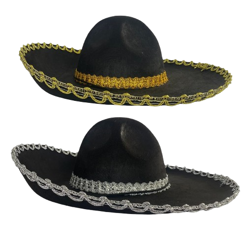

De forma geral, um chapéu serve para cobrir a cabeça, seja pelos diversos motivos, que vão de proteção solar até status social.
Antigamente e até hoje, o chapéu foi usado como indicadores do status social de alguém, como no caso das forças armadas, que os chapéus até indicam nacionalidade. Ou até mesmo como fatores de proteção, para com pedreiros, bombeiros, eletricistas…. Também é comum utilizar os chapéus durante cerimônias, festivas, de formatura…. Por motivos de cuidado, como por exemplo o chapéu de um cozinheiro. E também é utilizado por diversos outros motivos, como moda, respeito, proteção solar, estilo…
Os primeiros chapéus do mundo
Não se tem muita informação de qual época os primeiros chapéus foram inventados, porém, há alguns registros, como por exemplo a estatueta da Vênus de Willendorf, entre 27 e 30 mil anos. No qual, tal imagem sugere uma mulher usando um chapéu de tricô.
Um dos primeiros indícios dos primeiros chapéus confirmados conhecidos foi usado por um homem apelidado de Ötzi. Corpo e chapéu foram encontrados congelados, onde estavam desde aprox. 3250 a.C. Era um boné costurado de pele de urso com tira no queixo, que lembra um boné russo sem abas.
Porém, os primeiros chapéus usados culturalmente por um povo, que se tem evidência são de origem dos impérios antigos, um dos mais conhecidos é o chapéu frígio, lá também surgiu o píleo e o petasus (primeiro chapéu que tinha aba) utilizados pelos gregos para visibilizar a relação de escravização do escravizado.
Os Charros
Charro é historicamente considerado um chapéu utilizado por cowboys típicos do interior do México. Faziam tudo nas costas de um cavalo e trabalhavam como vaqueiros, usando o sombrero mexicano. Hoje em dia, o uso de Charros enquanto montado em um cavalo está quase que diretamente ligado a um esporte nacional de México, a charreada. O esporte é regulado por suas próprias regras tradicionais, em efeito dos tempos coloniais da Revolução Mexicana.
Etimologia
A palavra charro, foi documentada pela primeira vez em um livro espanhol chamado “Vocabulario de refranes y frases proverbiales” (1627) por Gonzalo Correas, como um sinônimo de idiota, ou pessoa estúpida. Depois de mais um século, no primeiro dicionário espanhol, “Diccionario de Autoridades” editado pela Academia Espanhola Real, Charro era definido como:
“O mal educado, o rude. Que cresceu em um lugar de pouco policiamento. No tribunal e em outros lugares, é usado este pronome para qualquer pessoa que venha do interior.”
Na primeira edição do dicionário, publicado em 1780, manteve-se esta original definição: “O arrogante e rústico, aquilo que os cidadãos tendem a ser.”. Mas adicionaram um segundo significado: “Adjetivo aplicado a objetos muito antiquados e de mau gosto.”. Mas por isso, o significado depreciativo se manteve às pessoas do interior, eles continuaram sendo vistos como ignorantes, insofisticados e rudes.
Dicionários Espanhol-Inglês como “Diccionario Español e Inglés” (1786) definiu o Charro como: “Rústico, de aspecto caipira”. Enquanto em 1802 “A New Dictionary of the Spanish and English Languages” definiu como: “Pessoa rude, idiota e mal educada”. E “Espalhafatoso, cheio de enfeites mesquinhos e sem graça”.
Em 1745, o jesuíta basco Manuel Larramendi argumentou que a palavra era de origem basca e significava “coisa vil e desprezível”, e escreveu que os camponeses eram chamados assim por desprezo. Enquanto o historiador e filósofo Antonio de Capmany y Montpalau, argumentou que a palavra era de origem Arábica, e que originalmente significava “Mau, de malícia moral e de seus costumes”.
No México, desde o 18º século, o termo charro foi usado de forma pejorativa aos Rancheros, habitantes do campo e das haciendas, que faziam todas as tarefas montados em cavalos. Por serem camponeses, foram considerados ignorantes, arrogantes e insofisticados. Logo após, a palavra passou a ser redefinida no México. De ser uma palavra de significado pejorativo para um termo não muito conhecido, e sinônimo de Ranchero, ou vaqueiro, e “Cavaleiro”. Em 1850, o historiador e escritor que morava no México, Niceto de Zamacois, definiu Charro: “Charros: gente del campo que se compone mucho para montar á caballo. “Camponeses que são habilidosos o suficiente para montar em um cavalo”.
Origem
O Vice-Reino da Nova Espanha proibiu os nativos americanos de montar ou adquirir cavalos, com exceção da nobreza Tlaxcaltecas, de outros chefes aliados e seus descendentes. Porém, a criação de gado exigia o uso de cavalos, o que fez os fazendeiros contratarem cowboys mestiços e às vezes indígenas. Alguns dos requisitos para andar a cavalo eram estar empregado em uma plantação, usar celas diferentes das usadas pelos militares, e usar roupas de couro, o que deu origem ao termo “cuerudo”(de couro).
Com o tempo, donos de terras e seus empregados, começando com aqueles que viviam no planalto Mexicano e logo após, o resto do país, adaptaram o seu estilo cowboy para melhor se adequar ao terreno e temperatura mexicano, se afastando do estilo espnahol de criação de gado. Depois da Guerra da Independência Mexicana, andar a cavalo tornou-se ainda mais comum. Vários cowboys se tornaram mercenários montados, mensageiros e fazendeiros. Antes conhecidos como Chinacos, logo, esses cowboys se tornaram os “vaqueros”.
Características do Charro
Cone longo com abas largas, também servem para se proteger do Sol. Os camponeses confeccionam os próprios com palha, enquanto os Charros dos ricos são feitos de feltro. Eles foram popularizados pelo Cinema norte-americano. Hoje em dia é muito raro ver alguém usando charro. Apenas em rodeios, apresentações folclóricas e músicais.
Outros Chapéus
Um bicórnio é um chapéu de dois cantos que era usado no século XVIII e XIX, principalmente por militares e oficiais. Ele é conhecido por seu design elegante e simboliza autoridade e formalidade da época.
O canotier é um chapéu de palha com copa reta e abas curtas, geralmente adornado com uma fita. Ele foi muito popular no final do século XIX e início do XX, associado a elegância e estilo casual.
O capotain é um chapéu de copa alta e estreita, com abas curtas, popular no século XVII, especialmente entre os puritanos e colonizadores. Ele é frequentemente associado a uma aparência formal e histórica.
O deerstalker é um chapéu de lã com abas dobradas e uma copa estruturada, tradicionalmente usado por caçadores na Inglaterra, especialmente para caçar cervos (daí o nome). Famoso por ser o estilo característico de Sherlock Holmes, é um símbolo de atividade ao ar livre e mistério.